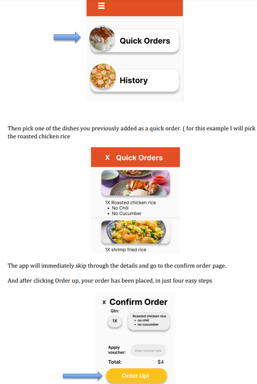

Relavent Links
Click here to see the full proposal
Click here to see the mobile prototype in figma
Click here to see the smart watch prototype in figma
Roles taken in this Project
- UI/UX designer/researcher/documentor
- Created Figma Prototype
- Wireframe maker done in AdobeXD
- Video Editor
What is FreshFare?
FreshFare is a delivery app, where home chefs can easily set up their own online stores on this app. Users will be able to order/pre-order meals from these home chefs and have it delivered to them with seamless delivery, and the home chefs will have an easy platform they can use to be able to promote their own home businesses.
Background
I plan to make a delivery app, where people can order home cooked from home chefs, to be delivered to them seamlessly without any conversation or need to meet up physically to pick up food, which reduces the spread of covid and give business to home chefs.
I first thought of this idea when covid-19 first started. My mother had a couple of friends who were in the food and beverage industry. However, due to the lockdown, many of them lost their jobs. This is supported by an article from CNBC stating that “ vast majority of the industry’s layoffs were in food service, where the government said 5.5 million chefs, waiters and cashiers lost jobs.” (Franck, 2020) . Those chefs tried to make money by selling food they had cooked in their own homes, however, the only ways they could promote their business was through WhatsApp and their own personal social media, but at times still struggled to find potential buyers, and were struggling to continue taking care of their families. Additionally, I also realized that due to covid-19, some people may not be with their families, and may miss eating home-cooked food. Thus, I thought of an idea that could help these home chefs, by having a dedicated platform where users who want to buy homemade food, can easily buy food from these home chefs, to be delivered to their houses without much contact with others.
If you would like to see the full documentation/proposal done by me, click the buttons on the left, or click here as I will show a summarised version of my documentation
Why retain FreshFare in a post covid world?
The benefits of retaining this app post covid today are that there are still home chefs who want to continue selling their food and people who want to buy home-cooked food. As seen from an article from Mothership, Cassandra Xu, who is a housewife and went on to being a home chef, and later created a telegram group to help promote and sell other home chefs food named cook for more, which proves that multiple are still trying to make a business as a home chef
By keeping up FreshFare in a post covid world, we can help these home chefs promote themselves on a dedicated platform without worrying much about delivery, or contacting people, as the delivery will be seamless without much interaction with the customer.
With 1 in 5 Singaporeans working more than 11 hours a day and only 22% cooking at home daily, there's a growing demand for convenient, home-cooked meals, since they may not have time to cook at home. FreshFare aims to address this need with an app connecting home chefs with busy individuals. By streamlining the process of setting up a profile and offering seamless delivery, FreshFare provides a solution for both home chefs looking to sell their dishes and busy consumers craving homemade food. The app targets a post-COVID market where there's still a demand for home-cooked meals, as evidenced by the ongoing activity in the telegram group shown above
Core Objectives
- A user who wants to set up an online store selling food, and for it to be easily delivered to others.
- A user who can buy home-cooked food on a platform easily without much hassle.
Compeitive anaylysis
I performed a competitive analysis of apps or websites similar to what I had in mind, I did a competitive analysis of Carousell, Facebook Market Place and Deliveroo , which can all be seen in detail in the full proposal
Mobile app functions
1. Setting up your own “store” easily as a home chef
Home chefs can easily set up their stores on the app by registering up as a chef, after that they can click on "setting up kitchen" to start setting up their shop, either by opening their online delivery for the day, setting up menu's, editing their description etc. A step by step guide of me breaking down the function can be seen in the demo video above or in the full proposal/document.
2. Being able to browse and order a meal
Users can order meals, whether it be MTO or preorder for example users can. From the image above, it is an example of a user ordering a chicken rice, where they can adjust the quantity, adjust if they don't want chili or even add it to "quick order" which will be discused later. A step by step guide of me breaking down the function can be seen in the demo video above or in the full proposal/document.
3. Favourites
Users can keep their favourite stores in a list which can be accessed by clicking the heart button in the ordering page or accessed through the hamburger menu.
4. Add, delete, and pick and switch the payment
With this function, you are able to add new payment options, pick which payment option you want to use, and delete payment options
5. Add Reviews
For users to trust buying from home chefs, there should be a way to see reviews and feedback on their profiles. You can see reviews on profiles by clicking the review tab. Home chefs can also take the reviews as feedback on what they can improve on as well
You are only allowed to review a shop after successfully ordering a meal from them, to keep it fair. To leave a review, open the hamburger bar and click on the feedback/review
Smartwatch functions
1. Quick orders
Since the smartwatch is small and mostly used for convenience I decided to make a function that can easily order your food in 4 taps. How to set an easy order for your smartwatch? As shown earlier, for made-to-order dishes, after editing your meal and adjusting a few things like quantity, you can save this order to quick order
2. Vibration to notify user’s
The smartwatch will vibrate on the user’s wrist to help notify the user that the food has arrived
3. Favourite
Here you can look at your favourite stores from the favourite list, and order a meal from it Favorite shows all your favorite stores that you have put in this list. The list can be adjusted in the mobile version. For the smartwatch, you can tap and open the favorites list and put a order. You can find your favourite in the hamburger bar
4. Being able to quickly order past orders you have ordered
If you are in a rush and want to order the exact same thing you ordered in the past, you can order it quickly by going into history
When you click on history it shows your past orders, in this instance its just one bowl of prawn noodles, you can click on the order and it will immediately show you the confirm order page. Click on order up and the order is complete
Persona
For this project, I decided to interview two people to represent the two different users who will use the app. One named Julie Yee, who lost her job as a cooking teacher during covid, who then turned to being a home chef to support her family during those tough times and the second person being Joshua Foo, a digital payment business project manager who works at food panda and also frequently uses the app as well
Julie Yee
Empathy Map
Day in a life
Joshua Foo
Empathy Map
Day in a life
User Flows
Ordering food from the mobile phone
Ordering food from the smart watch
Wire frames, low fidelity, and more
Wireframe done in Adobe XD

Low Fidelity sketch for Smart Watch
Colour palette and reasoning
I decided to use this color palette as Red and yellow are usually associated with food and or chiefs as it evokes the tastebuds and stimulates people’s appetite. The two colors are also very effective in grabbing attention due to their bright colors.